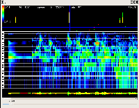
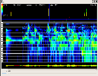

|
(重要なことは)個人的には、「自らに枷をはめない(ブレーキをかけない)」ことと、 「巨人の肩に乗る(他人の成果を活かす)」ことではないかと思う。
「まだ私は経験が足りないから」も、「もう新しいことを始めるには若くないから」も 言い訳であり、自分に対する枷である。
「学生たち、もうはじけちゃってます」という島崎先生の言葉に誘われて、 ミリアム館に音楽学部舞踊専攻の発表会を見に行く。 …… 驚いたのは、某課長が 「これまでの人生を反省して、これからはまじめに生きようと思いました」 という感想を告げたことである。
そして、幕が上がり… １時間５０分の舞台の感想はうまく言葉に出来ない。 とりあえず島崎先生の手を握って「ありがとうございました」というのが精一杯であった。 「あなたは偉大な教師だ」とも申し上げた。 世界的なコレオグラファーをつかまえて「偉大な教師だ」もないものだが、経験者とはいえ、 アマチュアの学生さんたちをわずか１年でこれだけのパフォーマンス・レベルに 導くことができた指導者の力量には脱帽するしかない。
島崎先生の教育法がどういうものか、見たことがない私にはよくわからないけれど、 「ブレークスルー」というのが何かを学生ひとりひとりに実際に経験させていることは はっきり知れた。 「自分の限界を超える」やり方を教えることはある程度技術のある教師ならできる (それさえできない教師も多いが)。 けれども、一度「自分の限界を超える」ことができた人間は、 「自分の限界を超えたやり方」に固執するようになる。 …… しかし、ほんとうにすぐれた教師は「自分の限界を超えるやり方」に固執してはならない ということを教える。 「変化する仕方そのものを変化させる」ことがエンドレスの自己超克のためには必要なのである。
人間が自己の技能や知見の限界を超える契機は二つある。 一つは「限界を超えなければ、生き延びられない」という 死活的なストレスをかけることによって。 もう一つは「限界を超えることは、愉しい」という身体的実感を知ることによって。 島崎先生はそのどちらをも熟知されていたように私には思われた。 だから私は「あなたは偉大な教師である」と申し上げたのである。
先日、納先生に「いくつもの趣味を本格的に楽しむためには、どんな秘訣があるんですか？」 と伺う機会がありました。先生は、 「おれの趣味はね、対象が何であれ、努力することなんだ」 とおっしゃいました。
カントの講義スタイルは、その問題をあたかも初めて考えたかのように提起して、 いろいろなアイデアをその場で生みだし、様々な角度から検討し、多角的に眺め、 講義が終わった時には、聴講生は単に知識を得るだけではなく、 そもそも思考というものはどのような方法論で進めるべきなのか、 その技術をも体得したとされる。
カントにあやかったわけではないが、私は、何か話す時に、できるだけ、 まるで生涯で初めてそのことを考えたかのように、 新鮮な気持ちになって、その場で表出されるものをつかもうと努力する。
-L/usr/local/lib/gcc-4.2.0 -lgfortran \ -L/usr/local/lib -lblas -llapack \ -lm
-L/usr/local/lib/gcc-4.2.0 -lgfortran \ -L/usr/local/lib -lalapack -lf77blas -lcblas -latlas \ -lm
-lg2c -lblas -llapack\ -lcblas -lf77blas -latlas\を
-L/usr/local/lib/gcc-4.2.0/gcc/i386-portbld-freebsd6.2/4.2.0\ -L/usr/local/lib/gcc-4.2.0\ -lgfortranbegin -lgfortran\ -llapack -lcblas -lf77blas -latlas -lalapack\に置き換えたら動いている様子、しかし確信がない。 (何がどうなっているのか理解できてない。) きちんと押えるプロセスを踏んでから進むことにしよう。ということで、また一時停止…
それがあるからこそ、日本の床屋はフィリピンの床屋の 10 倍の料金を取れるわけだ。 日本の管理職は途上国の百倍の給料をもらえる。 官僚も、食堂も、あらゆるサービス業がそうだ。 はてなに巣くうお気楽大学生どもが、バイトで途上国の高級官僚の何倍ものお金を稼げるのも、 究極的にはシャープやソニーやスズキのおかげなんだよ。 腐ったアーティストだの、エコロジストだの、 勉強不足の新聞記者だの大学教師だのが高い給料をもらってのほほんとして、 大企業批判にうつつをぬかしていられるのは、 実はかれらが往々にして忌み嫌う大企業の大量生産システムのおかげなんだ。 ２ちゃんねるに巣くう（一部の）くされニートどもだって、 その安楽な生活はかれらがとかく批判したがる大企業が高い生産性を実現している 余剰にたかっているだけなんだよ。

 
また、である。が、歴史を見れば分かるように、やるときにやらないと絶対にやらないので。
「できるけどやらない」は負け惜しみであり、「できない」と同義です。

また、である。が、歴史を見れば分かるように、やるときにやらないと絶対にやらないので。
「できるけどやらない」は負け惜しみであり、「できない」と同義です。
 というか、前の
SDL 版スペアナの
gtk 版を書こうという話。
何で gtk かというのは、 file selector とかが既にあるから。
(SDL にそういうのがあればそれにしたんだけど)
というか、前の
SDL 版スペアナの
gtk 版を書こうという話。
何で gtk かというのは、 file selector とかが既にあるから。
(SDL にそういうのがあればそれにしたんだけど)クルーソーはそれを見て、人間は人間の肉を食うのだという“現実”を知り、…… クルーソーはしだいに、世の中というものが神の摂理や経済の確立だけではなく、 社会の悪によっても成立していることを知る。 「人が人を食う」ということに社会と経済の本質があることまで感じはじめたのだ。
(なぜ子どもたちが学びたがらないか、について) その理由を本書では，子供がまず消費主体として自己を確立してしまうことに 求めているんだが，これは卓見だろう。 なんつうかな，世の中ってのは損得だけでなんとかなってくモンぢゃないって「常識」 …「良識」つってもいいが，が音を立てて崩れはじめてるような気がするのだ。
いったい日本に年俸五億円の社長が何人いるであろうか？ ということは、この本はそのような方々を読者に想定しているわけではないということである。 年俸５００万円のサラリーマン諸氏がこれを読んでいる。 私はそれが滑稽だと言っているのではない。 つまり、これは「年俸五億円目線に同調した気分」を売っている商品だということであり、 それが売れるということはそのような商品についての需要が現に存在するということなのである。 この手のビジネス本の真の売り物は「他者の目線」なのである。 これは決して悪い商品ではないと私は思う。 「五億円社長本」がサラリーマン向けであるように、 「社長目線」の本は「国民のみなさま」向けの本である。 というのは、「国民のみなさま」というのは、 （「有権者のみなさま」や「納税者のみなさま」と同じく）、 世事を高みから見下ろすことのできる特権的で幻想的な視座だからである。 たまには自分の等身大を離れて、同じ問題を少し「体温の低い」視座に立って 吟味した方がいいと思う。 それゆえ私は本書を「国民のみなさま」にご推奨するのである。
低倍率の国立大は、愛媛大（０．４倍）を筆頭に、 九州工業、佐賀、長崎、鹿児島の４大学が０．５倍で並んだ。
|
Copyright (C) 1997-2012, Kengo Ichiki
twitter: @ichiki_k |
|
 2007年2月
2007年2月{kind=link}
{kind=link}